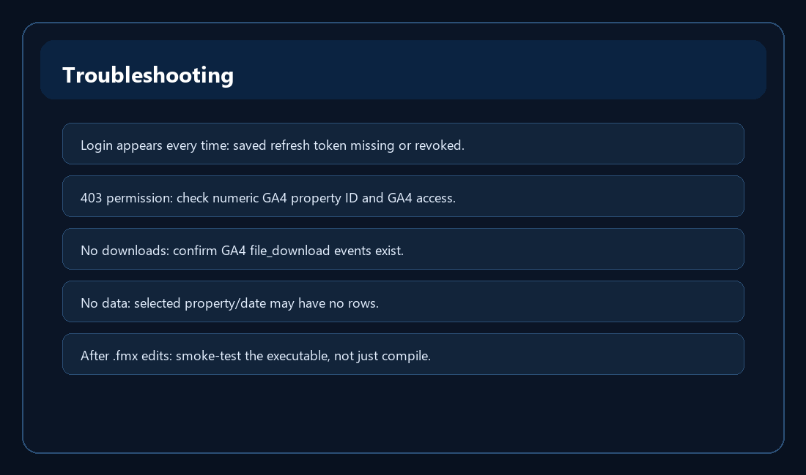

Troubleshooting

OAuth setup problems
- If the app says OAuth client ID needed, open Settings and enter the desktop OAuth client ID from Google Cloud.
- If Google says the app is not verified, that is expected while the OAuth app is in testing.
- If Google sign-in appears every time, the saved encrypted refresh token is missing, revoked, or cannot be decrypted under the current Windows account.
GA4 permission problems
- A 403 permission error usually means the property ID is wrong or the signed-in Google account cannot read the GA4 property.
- Confirm the numeric GA4 property ID in Properties, then confirm the Google account is listed in GA4 Admin with sufficient access.
No rows or missing downloads
- No rows can simply mean the selected property/date range has no returned data.
- Missing downloads usually means GA4 did not report file_download or related events for the selected date range.